Cities
We serve the following towns.
Greater Austin area. DFW area, Houston area, San Antonio area.
Towns
Greater Austin, DFW, Houston, and San Antonio.
- Addison
- Alamo Heights
- Allen
- Alvin
- Angleton
- Arlington
- Atascocita
- Austin
- Azle
- Balch Springs
- Balcones Heights
- Bandera
- Barton Creek
- Baytown
- Bedford
- Bellaire
- Boerne
- Brenham
- Brookshire
- Canyon Lake
- Castroville
- Cedar Hill
- Cedar Park
- Channelview
- Cinco Ranch
- Clear Lake Shores
- College Station
- Coppell
- Corpus Christi
- Dallas
- Deer Park
- Denton
- Dickinson
- Dripping Springs
- Duncanville
- Eagle Lake
- Ennis
- Fair Oaks Ranch
- Farmers Branch
- Flower Mound
- Forney
- Fort Worth
- Freeport
- Friendswood
- Frisco
- Fulshear
- Galena Park
- Galveston
- Garland
- Grand Prairie
- Greatwood
- Hempstead
- Highland Park
- Highland Village
- Hitchcock
- Houston
- Humble
- Huntsville
- Hurst
- Jersey Village
- Katy
- Kerrville
- League City
- Leon Valley
- Lewisville
- McKinney
- Mansfield
- Marble Falls
- Meadows Place
- Mesquite
- Missouri City
- Montgomery
- Nassau Bay
- North Richland Hills
- Pasadena
- Pearland
- Pflugerville
- Richmond
- Rosenberg
- San Antonio
- Seabrook
- Sealy
- Shavano Park
- Sherman
- Southlake
- Stafford
- Sugar Land
- Texas City
- The Colony
- The Woodlands
- Trophy Club
- University Park
- Waxahachie
- Weatherford
- Westlake
- West Lake Hills
- Wharton
- White Oak
- Wimberly
- Wylie
Areas
More targeted geo directed search results.
Find what you want where you want it.
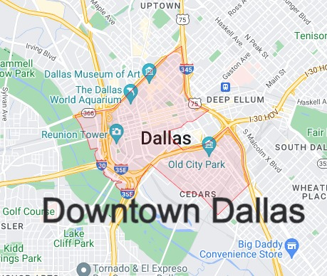
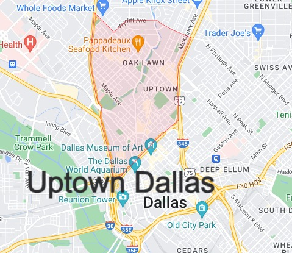
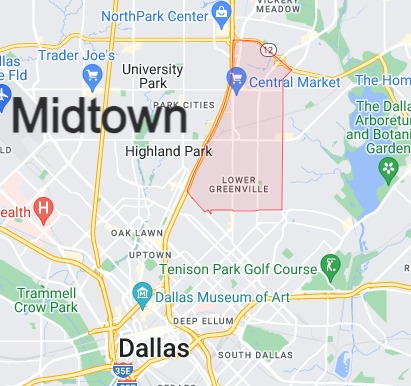
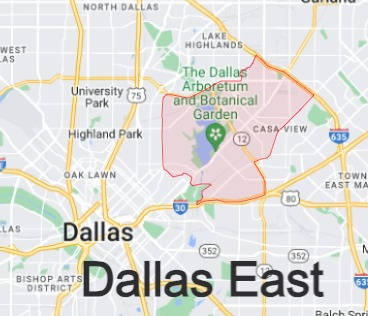
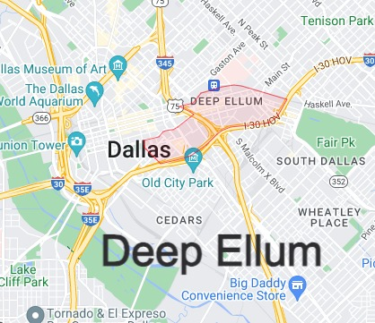
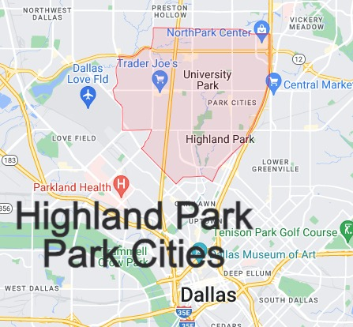
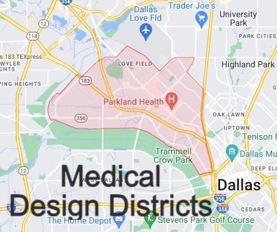
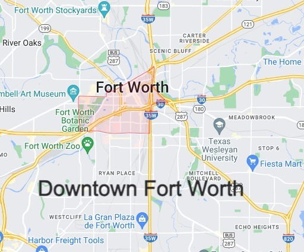
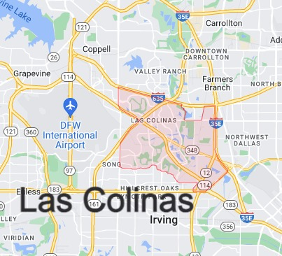
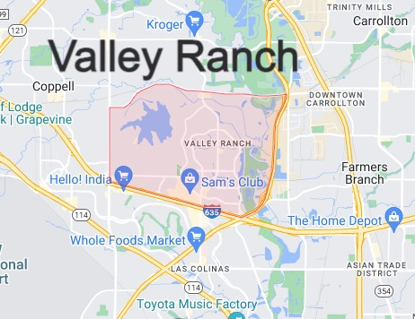
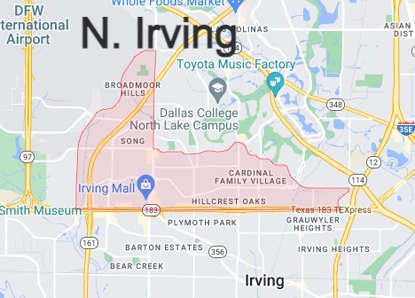
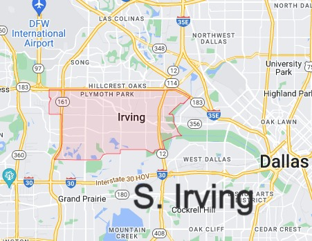
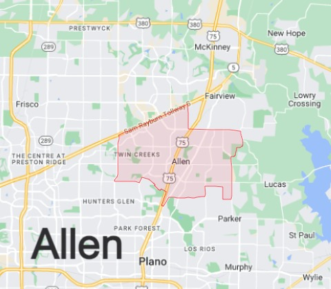
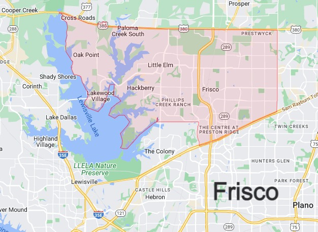
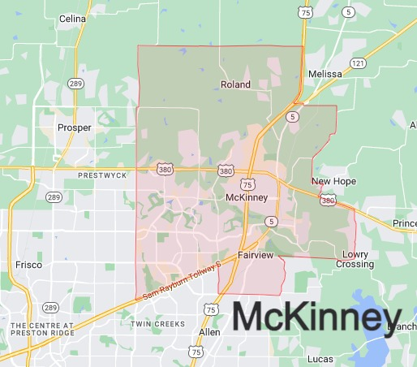
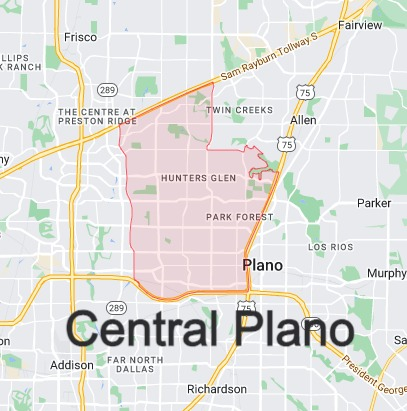
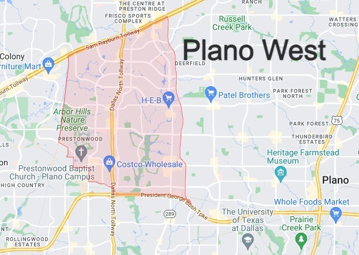